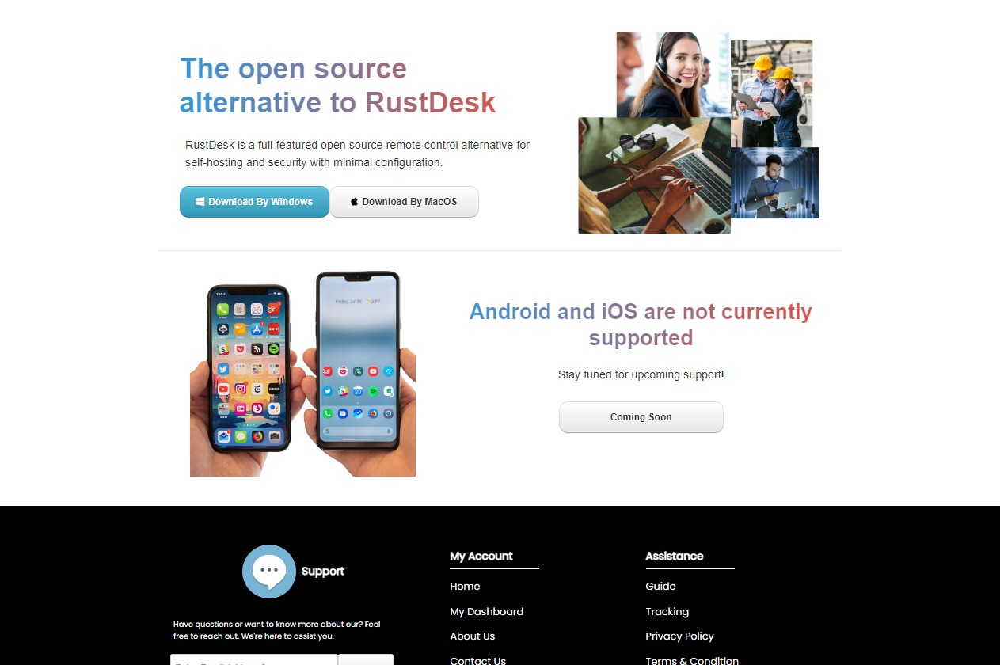

RustDesk.
Selected remote-access interface and web presentation screens.

Project at
a glance.
Two supplied visuals documenting work around a RustDesk-related interface and supporting web presentation. They are showcased as final/reference screens, not as a before-and-after comparison.
Explore the
interfaces.
The screenshots below are presented as final design / interface views. Select any image to inspect it at full size; use the arrow keys to navigate.
Gallery uses the original screenshots supplied for this portfolio. The images have not been fabricated or labeled as before-and-after comparisons.
What the
screens show.
The two screenshots show a remote-access application screen and a RustDesk web page.
This is a final-interface showcase, not a before-and-after redesign comparison. Specific usability metrics, implementation scope and production status are not claimed without supporting evidence.